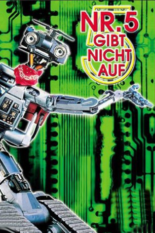

#5925 Nummer 5 gibt nicht auf
Alternativ: Short Circuit 2
 
 IMDB-Wertung: 5.6 / 10
IMDB-Wertung: 5.6 / 10  Metascore: 0
Metascore: 0 
Er ist zurück: Nummer 5, der netteste Roboter der Welt. Der süße Metallbube eroberte schon mit seinen ersten Abenteuern die Herzen eines Millionenpublikums. Hier ist die Fortsetzung! Nummer 5 hat sich mittlerweile den Vornamen Johnny zugelegt und besucht seinen Freund und Konstrukteur Ben Jahrvi in der Großstadt, um ihm beim Aufbau eines Spielwaren-Großhandels zu helfen. Doch erst einmal entdeckt Johnny die Verlockungen des Stadtlebens und geht auf eine kleine Vergnügungstour. Getarnt mit Hut und Trenchcoat liest er einen Buchladen in einer halben Stunde leer, hilft ahnungslos einer Street-Gang beim Autoknacken, versucht in der Kirche die versprochenen “Antworten auf alle Fragen” zu bekommen und löst sämtliche Arbeits- und Liebesprobleme seines Freundes Ben. Kann das gut gehen?
Jahr: 1988
Dauer: 110 Minuten
FSK: 6
Land: USA Studio: TriStar PicturesTonspuren: DD2.0 - ,
Untertitel:
Auflösung: 1080p (1920x1040) Größe: 6860 MB
Genre: Drama, Sci-Fi, Komödie, Familie
Regisseur: Kenneth Johnson
Drehbuch: Milo Addica
Soundtrack:
Darsteller:
 Tim Blaney als Johnny 5
Tim Blaney als Johnny 5 Fisher Stevens als Ben Jahveri
Fisher Stevens als Ben Jahveri Michael McKean als Fred Ritter
Michael McKean als Fred Ritter- Cynthia Gibb als Sandy Banatoni
- Jack Weston als Oscar Baldwin
 Don Lake als Manic Mike
Don Lake als Manic Mike- Damon D'Oliveira als Bones
 Robert LaSardo als Spooky
Robert LaSardo als Spooky- Wayne Best als Officer O'Malley
- Gerard Parkes als Priest
 Tony De Santis als Russian Taxi Driver
Tony De Santis als Russian Taxi Driver Eric Keenleyside als Simpsons Truck Driver
Eric Keenleyside als Simpsons Truck Driver- Jeremy Ratchford als Bill
- Ric Sarabia als Toy Robot Builder
 Barry Flatman als Robotic Company C.E.O.
Barry Flatman als Robotic Company C.E.O.- Norwich Duff als Paramedic
- Claudette Roche als Secretary
- Frank Adamson als Desk Sergeant
 Ally Sheedy als Stephanie Speck , uncredited
Ally Sheedy als Stephanie Speck , uncredited- Dee McCafferty als Saunders
- David Hemblen als Jones
- Tito Núñez als Zorro
- Jason Kuriloff als Lil Man
- Lili Francks als Officer Mendez
- Adam Ludwig als Hans de Ruyter
- Rex Hagon als Dartmoor
- Rummy Bishop als News Vendor
- Richard Comar als Mr. Slater
- Phillip Jarrett als Card Hustler
- Kurt Reis als Mr. Arnold
- Garry Robbins als Francis
- Jane Schoettle als Robotic Company Executive
- Carlton Watson als Robotic Company Engineer
- Eve Crawford als Federal Judge
- Craig Gardner als Art Lover
- Micki Moore als Art Lover
- Sam Moses als Clothing Store Owner
- Chris Barker als Bus Driver
- Peter Shanne als Entourage Leader
- James Killeen als Reporter
- Patrick Greenwood als S.W.A.T. Team Officer
- Michael Hale als Screaming Cop , uncredited
Datei: X:\2-Dilogie(N-Z)\Nummer 5\Nummer 5 gibt nicht auf (1988, FSK6, 1920x1040).mkv seit 06.04.2017
Festplatte: HD Collection-2(A-Z)-3(A-M)
 Alle Filme aus Gruppe '2-Dilogie(N-Z)\Nummer 5'
Alle Filme aus Gruppe '2-Dilogie(N-Z)\Nummer 5'